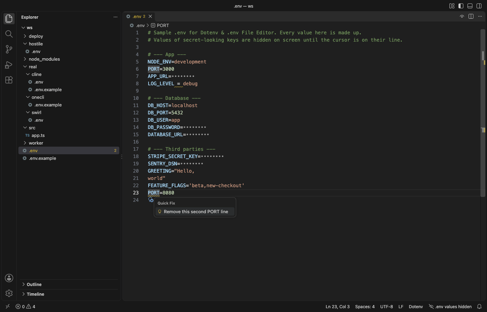

Panduan dalam bahasa Indonesia
Edit file .env di VS Code tanpa menampilkan nilai rahasia Anda
Pasang ekstensi gratis Dotenv & .env File Editor lalu buka file .env. Key dan nilai diberi warna, dan nilai key seperti DB_PASSWORD atau STRIPE_SECRET_KEY tampil sebagai titik sampai kursor berada di barisnya, sehingga Anda bisa berbagi layar. Problems dengan quick fix, Format Document, outline key, dan hover pada process.env.X di kode Anda gratis dan bekerja offline. Zovo Pro (USD 19 sekali bayar) menambahkan tiga alat, Compare .env with .env.example, Find Keys Missing in Code or .env, dan Convert .env to JSON, YAML, Kubernetes, dan masing-masing bisa dicoba 3 kali gratis.
Gratis, lisensi MIT. ID ekstensi zovo.zovo-dotenv, versi 0.1.0.
Panduan ini juga tersedia dalam English · Français · 한국어 · Polski · Português (Brasil) · Русский · 简体中文 · Italiano · Nederlands · Türkçe · Tiếng Việt · हिन्दी · ไทย · Українська

Langkah di VS Code
- Pasang Dotenv & .env File Editor dari Marketplace, atau tekan Ctrl+P (Cmd+P di macOS) lalu jalankan
ext install zovo.zovo-dotenv. - Buka file
.env(juga.env.local,.env.production,*.env, atau.flaskenv). Key,export, nilai, nilai multi-baris, dan referensi${NAME}diberi warna. - Nilai yang tampak rahasia tampil sebagai titik sampai kursor berada di barisnya. Klik tombol mata di judul editor, atau jalankan "Dotenv: Show or Hide Secret Values", untuk menampilkan semuanya. Template seperti
.env.exampletidak pernah disembunyikan. - Masalah tampil di panel Problems: key yang di-set dua kali, spasi di sekitar
=, kutip yang tidak ditutup, baris tanpa=, nama yang tidak valid, spasi di akhir baris, atau${NAME}yang tidak di-set oleh baris mana pun. Tekan Ctrl+. (Cmd+. di Mac) pada salah satunya untuk perbaikannya. - Jalankan Format Document untuk menghapus spasi di sekitar
=dan spasi di akhir baris. Komentar, urutan, dan kutip tetap seperti semula. - Untuk menyalin sebuah nilai tanpa menampilkannya, jalankan "Dotenv: Copy the Value on This Line". Perintah ini menyalin nilai tanpa kutip dan escape, bahkan saat nilainya disembunyikan.
- Di kode Anda, arahkan kursor ke
process.env.DB_HOST,os.getenv("X"),System.getenv("X"), dan sejenisnya untuk melihat file .env mana yang mengaturnya, lalu tekan F12 untuk membuka baris itu.
Yang gratis dan yang ditambahkan Zovo Pro
Warna sintaks, nilai rahasia yang disembunyikan, problems dengan quick fix, Format Document, outline key, Copy the Value on This Line, serta hover, go to definition, dan completion di kode gratis. Tanpa akun, tanpa permintaan jaringan, dan tanpa telemetri.
Compare .env with .env.example mencantumkan key yang tidak ada di .env, key yang tidak didokumentasikan di .env.example, dan key yang kosong, dalam laporan di samping file. Tombol lalu menambahkan key yang hilang ke salah satu file: ke .env dengan nilai contoh, atau ke .env.example dengan nilai kosong. Nilai dari .env tidak pernah ditampilkan atau disalin, sehingga Anda bisa menyamakan setup rekan tim atau deploy yang gagal tanpa membaca file baris demi baris.
Cara memakai Compare .env with .env.example (Zovo Pro)
- Klik kanan file .env di Explorer lalu pilih "Zovo Pro: Compare .env with .env.example", atau jalankan "Dotenv: Compare .env with .env.example (Pro)..." dari Command Palette. Perintah ini memakai file .env di tab aktif, atau menanyakan file yang mana.
- Jika tidak ada
.env.example,.env.sample,.env.template, atau.env.distdi sebelahnya, pilih "Create .env.example next to .env" atau "Pick another file...". - Baca laporan yang terbuka di samping file. Klik "Add N keys to .env.example (empty values)" atau "Add N keys to .env (example values)" untuk menambahkan key.
- Percobaan hanya dihitung jika laporan terbuka. Escape atau Cancel tidak pernah memakai percobaan.
Compare .env with .env.example bisa dipakai 3 kali gratis di komputer Anda sebelum meminta lisensi. Tidak ada popup dan tidak ada hitung mundur.
Zovo Pro seharga USD 19 sekali bayar. Ini bukan langganan, dan lisensinya mengaktifkan alat Pro di semua ekstensi Zovo, tidak hanya di Dotenv & .env File Editor. Setelah Anda membayar dengan kartu (Stripe), kunci lisensi muncul di halaman berikutnya. Di VS Code, jalankan "Zovo Pro: Enter Zovo Pro license key" dari Command Palette lalu tempel kuncinya. Kunci diperiksa di komputer Anda, tanpa koneksi jaringan. Dengan GitHub Sponsors, pilih tingkat "$19 one time", lalu jalankan "Zovo Pro: I already paid: unlock with GitHub Sponsors".
Tim berisi 5 orang membayar USD 59, juga sekali bayar (dengan kartu). Semua aturan dan semua alat Pro ada di halaman Zovo Pro (bahasa Inggris).
Langkah di Cursor, Windsurf, atau VSCodium
- Buka tampilan Extensions dengan Ctrl+Shift+X (Cmd+Shift+X di macOS).
- Cari
zovo.zovo-dotenvlalu klik Install. Cursor, Windsurf, dan VSCodium memasang ekstensi dari Open VSX, dan di sana ekstensi ini bernamazovo/zovo-dotenv. - Jika editor Anda tidak punya galeri ekstensi, unduh file .vsix dari halaman Open VSX lalu jalankan "Extensions: Install from VSIX...".
- Setelah itu, semuanya berjalan sama seperti di VS Code.
Yang bisa dilakukan Dotenv & .env File Editor
- File
.env,.env.*(seperti.env.localdan.env.production),*.env, dan.flaskenv. - Nilai yang disembunyikan: nama yang mengandung PASSWORD, TOKEN, SECRET, API_KEY, DSN, DATABASE_URL, dan sejenisnya, atau semua nilai, atau tidak ada (pengaturan
envFile.maskValues). - Hover dan go to definition di kode untuk
process.envdanimport.meta.env(JavaScript, TypeScript),os.environdanos.getenv(Python),os.Getenv(Go),ENV(Ruby),System.getenv(Java),env()(PHP), dan lainnya. - Completion key setelah
process.env.. - Nilai yang disembunyikan tetap tersembunyi di outline, hover, dan completion, kecuali Anda mematikannya (pengaturan
envFile.hoverShowsSecrets).
Yang tidak bisa dilakukan
- Penyembunyian hanya untuk layar. Teksnya tetap ada di file, di hasil pencarian, dan di bentuk minimap, dan copy-paste menyalin nilai aslinya.
.envrc(direnv) adalah shell script dan diserahkan ke ekstensi shell.- Laporan kode hanya melihat nama literal seperti
process.env.API_KEY. Nama yang dibentuk saat runtime tidak ditemukan. - Problems mengikuti aturan package
dotenv. Beberapa alat (Docker Compose v1, systemd) lebih ketat, dan hal itulah yang ditunjukkan oleh peringatannya.
Pertanyaan umum
Apakah gratis?
Warna, nilai yang disembunyikan, problems dengan quick fix, format, dan hover di kode gratis. Tiga alat Pro, Compare .env with .env.example, Find Keys Missing in Code or .env, dan Convert .env to JSON, YAML, Kubernetes, masing-masing bisa dicoba 3 kali gratis. Setelah itu alat tersebut memerlukan Zovo Pro, USD 19 sekali bayar untuk semua ekstensi Zovo.
Apakah file .env saya diubah untuk menyembunyikan nilainya?
Tidak. Hanya tampilannya yang berubah, filenya tidak pernah diubah. Copy-paste tetap menyalin nilai aslinya.
Mengapa key saya ditandai di-set dua kali?
Key yang sama muncul di dua baris. Package dotenv memakai nilai pertama, sedangkan shell dan Docker Compose memakai nilai terakhir. Quick fix menghapus baris kedua.
Apakah bisa dipakai di Cursor?
Bisa. Cursor, Windsurf, dan VSCodium memasangnya dari Open VSX, tempat ekstensi ini diterbitkan sebagai zovo/zovo-dotenv.
Selengkapnya
Panduan dalam bahasa Inggris berisi lebih banyak detail dan pilihan lain. Setiap fitur dan pengaturan dijelaskan di halaman Dotenv & .env File Editor (bahasa Inggris).
Fakta diperiksa pada 13 November 2026 dengan versi Marketplace saat ini.